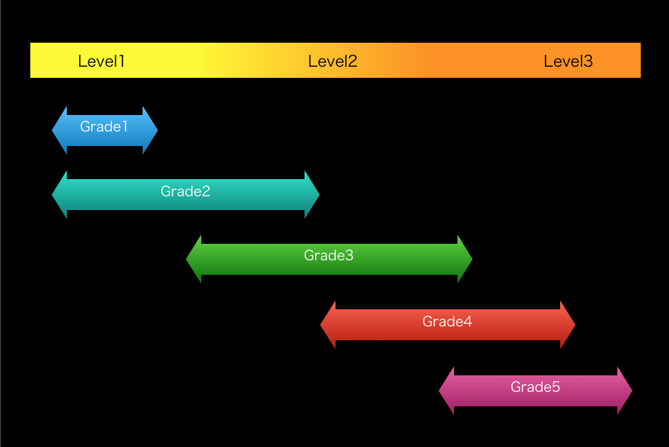
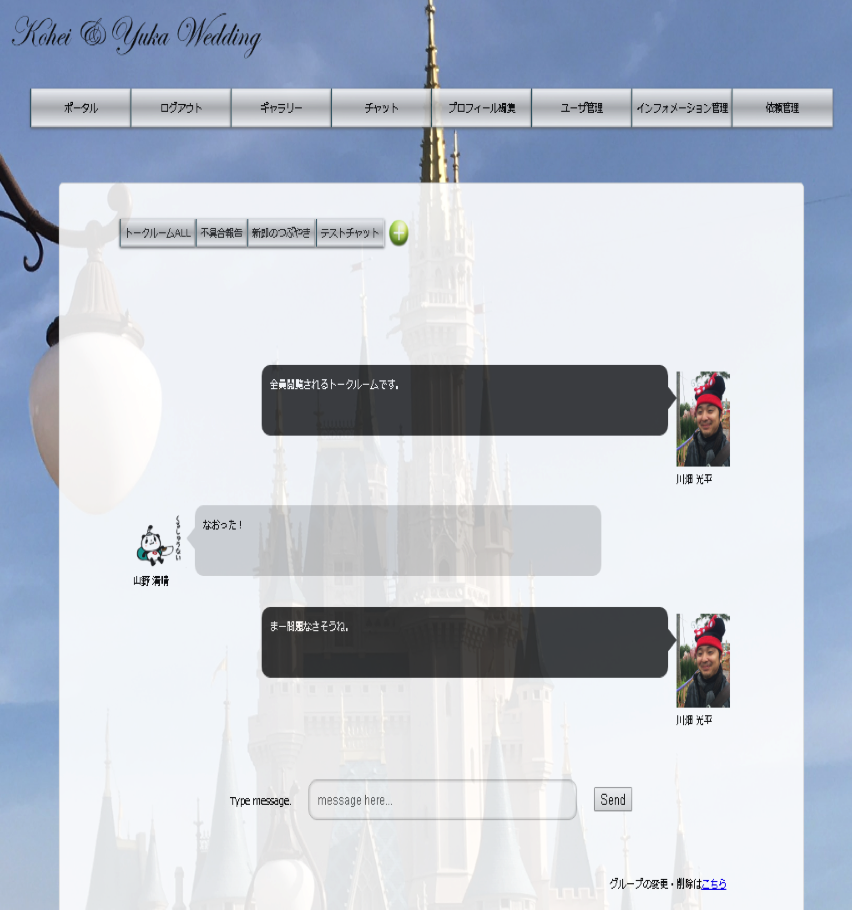
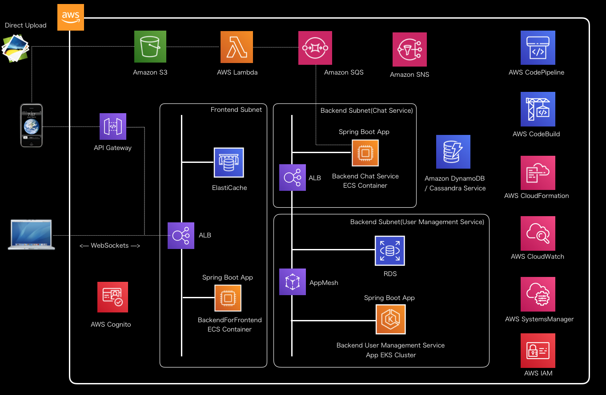

Technical Academy
Cloud Native & MicroService on AWS
2020.1.17
自己紹介

- 名前：川畑 光平
- 今の仕事：プロジェクト支援(主にクラウド系)とR&D
- これまでの仕事
- 某金融機関IBアプリケーション開発(投資信託業務)
- 某金融社団法人システム基盤開発
- 自動化ツール開発
- プロジェクト支援多数(AP基盤/自動化開発プロセス)
- 長崎県出身
- 趣味：AP実装、料理、水泳、スノボ、DQウォーク
- 学生の頃Appleでバイトしてました(iPodが流行った頃)
- 2019.2月に長男が誕生
- 2019 APN AWS Top Engineers & Ambassadors
- マイナビ「ITSearch+」で記事連載中
←私
←長男
 How to use this slide
How to use this slide
- 青色の文字はリンク
- ESCキーを押すとスライドのオーバービュー
- Altキー + マウスクリックで拡大ズーム
- J,K,M,Lキーでも遷移
- 幾つかのスライドは下に遷移
- “shift + ?”でショートカットキー一覧
※当スライドは 「reveal.js」 を使って、GitHub Pages上に作成
技術テーマジャンル
- マイクロサービスアーキテクチャ
- クラウドネイティブアプリケーションデザインパターン
- リアクティブプログラミング/サーバレス
- NoSQLデータモデリング・実装
TECHNICAL ACADEMY R&D THEME
| Category | テーマ | Level |
|---|---|---|
| マイクロサービスアーキテクチャ | Cell-Based Architecture on AWS の検証 | 3 |
| サービス連携処理パターンの検証(オーケストレーション/コレオグラフィ/SAGAパターン等) | 3 | |
| ドメイン駆動設計を用いたマイクロサービスモデリング手法検証 | 3 | |
| ログ出力方式ベストプラクティス(CloudWatchLogs/Fluentd/ElasticSearch/Kibana/ AWSGlue/Athena/Prometeus) |
2 | |
| OpenIDConnect/OAuth2/認証・認可処理パターン検証 | 3 | |
| JakartaEE-Eclipse MicroProfile検証 | 3 |
| Category | テーマ | Level |
|---|---|---|
| クラウドネイティブアプリケーションデザインパターン | オンライン非同期処理パターン(Spring Cloud Stream/Spring Integration/Amazon Managed Streaming for Kafka/Kinesis) | 3 |
| クラウドバッチ処理パターン(SpringCloudAWS/AmazonSQS/AWSBatch/SpringBatch/ AWSStepFuntions) |
3 | |
| コンテナ&サーバレス連動処理パターン (AWS Lambda/AmazonElastiCache/WebSockets) |
3 | |
| マネージドサービス連携ベストプラクティス(AmazonS3/AmazonSQS/AmazonMQ/AmazonSNS) | 2 | |
| EKS/AppMesh/SpringCloudKubernetes/サービスメッシュ検証 | 3 | |
| CloudFormationを用いたアプリケーションDevOps基盤自動化資材の開発 | 2 |
| Category | テーマ | Level |
|---|---|---|
| リアクティブプログラミング/サーバレス | GraalVM/Micronaut/Quarkus/SpringCloudFuntion on AWS Lambda検証 | 3 |
| SpringWebFluxの特徴・実装ノウハウの整理 | 3 | |
| サーバレスアーキテクチャパターンonAWSの整理 | 2 | |
| NoSQLデータモデリング | AmazonDynanoDB/ApacheCassandraService等 AP型NoSQLの特徴/運用ノウハウ/データモデリング手法確立 |
3 |
| AmazonElastiCache/SpringSession/SpringDataRedis を使ったスケラーブルアプリケーションノウハウ整理 |
2 | |
| ApacheCassandraService/BigData(ApacheSpark/Hadoop/ ElasticMapReduce)連携検証 |
3 |
| Category | テーマ | Level |
|---|---|---|
| ニュージャンル | AWS IoT検証(AWS IoT Core/Device Management/ /Analytics/SiteWise等) |
2 |
| エッジコンピューティングアーキテクチャ on AWS検証 | 3 | |
| AWS SystemsManagerエンタープライズ運用 ベストプラクティスの整理 |
2 | |
| AmazonCodeGuru(コードレビュー自動化)検証 | 2 | |
| AmazonSumerian(VR/AR)検証 | 2 | |
| ML/AIサービス検証(Amazon SageMaker等) | 2 | |
| モバイルアプリケーション(AWS MobileHub/ Amplify/iOS/Android)教育コンテンツ整備/ アーキテクチャパターン検証・実装ノウハウの整理 |
2 | |
| Kotlin/Go/Angular/React/Python検証・実装ノウハウの整理 | 2 |
TECHINICAL GRADE
| Grade | 各グレードスキル要件・業務経験の目安 |
|---|---|
| Grade5 |
・Redhat Certificated Architect相当 ・アプリケーション基盤開発のほぼ全ての機能設計・実装をリーダとして従事した経験 |
| Grade4 |
・Pivotal Certificated Spring Professional相当 ・TERASOLUNA認定アーキテクト相当 ・Oracle Certified Master Enterprize Architect相当 ・Redhat Certified Engineer相当 ・AWS Certificated Solution Architect/Developer Professional相当 ・アプリケーション基盤開発で主要な機能設計・実装をリーダとして従事した経験 |
| Grade3 |
・Oracle Certifies Java Programmer Gold相当 ・TERASOLUNA認定プログラマ相当 ・LPIC level3相当 ・AWS Certificated Solution Architect/Developer Associate相当 ・アプリケーション基盤開発で主要な機能設計・実装を複数従事した経験 |
| Grade2 |
・Oracle Certifies Java Programmer Silver相当 ・LPIC level2相当 ・アプリケーション基盤開発に複数従事した経験 |
| Grade1 |
・Oracle Certifies Java Programmer Bronze相当(研修受講済程度) ・LPIC level1相当(研修受講済程度) |
TECHINICAL GRADEとTHEME LEVELの目安

 グレードが満たないからといって、高いレベルのテーマをやるのはNGというわけではない
グレードが満たないからといって、高いレベルのテーマをやるのはNGというわけではない
FOR TECHINICAL GRADE UP
| Grade | Recommendation |
|---|---|
| Grade4 |
・技術の最新動向を追いかけよう。AWS re:InventやSpringFEST等積極的に外部イベントに参加。 ・1つのテーマがまとまったら外部発表しよう。その分野の第一人者を目指すべし。 ・より技術の裾野を広げよう。 |
| Grade3 |
・Grade4相当の資格取得を目指そう。TERASOLUNAアーキテクト資格相当の技量がないとAP基盤リーダは任されない。 ・技術の最新動向を追いかけよう。AWS re:InventやSpringFEST等積極的に外部イベントに参加。 ・自分ひとりで本格的なアプリケーションを実装して、デプロイまでもっていけるようになること。お薦めはチャットメッセージアプリケーションのマイクロサービスアーキテクチャ構成。 |
| Grade2 |
・Grade3以上の資格を取得を目指そう。おすすめの書籍は別紙を参照。 ・資格取得に必要な様々な研修を受講しよう。 ・自分ひとりで本格的なアプリケーションを実装して、デプロイまでもっていけるようになること。お薦めはチャットメッセージアプリケーションのマイクロサービスアーキテクチャ構成。 ・実装作業イメージがわかないのであれば「AWSで作るクラウドネイティブアプリケーション」や「AWSで実践! 基盤構築・デプロイ自動化」の記事の内容をそのまま実施。 |
| Grade1 |
・まずはGrade2以上の資格を取得を目指そう。おすすめの書籍は別紙を参照。 ・資格取得に必要な様々な研修を受講しよう。 ・「AWSで作るクラウドネイティブアプリケーション」や「AWSで実践! 基盤構築・デプロイ自動化」の記事の内容をそのまま実施。 |
Certification Guide
| Certification | Description |
|---|---|
| Redhat Certified Architect | Redhatの最上位資格。RHCE認定が前提条件の上、5つのエキスパート資格が必須。持っていれば何も言うことはない。 |
| Oracle Certifies Master Enterprize Architect | Oracle JavaEEエンタープライズアーキテクトの最上位資格。EJB、CDI、JPA、JSF、JAX-RS、JAX-WSといったJavaEEに関する広範囲な知識を問われる。問題は英語のみ。グローバルに通用する資格であるし、JavaEEは社外(Oracle、IBM、NEC、HITACHI、FUJITSU)で使われているケースが結構多いので、必ずしも取得する必要はないが、知識や実装方法を押さえておくとベター。 |
| TERASOLUNA認定アーキテクト | TERASOLUNA認定プログラマの内容に加えて、GoFアーキテクチャパターンやJavaのスレッドセーフ問題、TERASOLUNA開発手順等、Java-Webアプリケーションを開発する上で広範囲な知識が問われる。お薦めの書籍を読んだり、業務の中で地道にSpringを使った実装、TERASOLUNA開発手順等、知識を積み上げていく必要がある。 |
| Pivotal Certificated Spring Professional | SpringFrameworkを使ったアプリケーション実装に必要な広範囲の知識を問われる。問題は英語だが、詳細はカサレアルの研修サイトが詳しい。Springで一連の機能を使ったアプリケーションを作成すると解きやすい問題構成。 |
| Redhat Certified Engineer | Redhatの上位資格。3.5Hの実技試験で出題範囲が広範囲に渡り問題数が多い(Webサーバ、メールサーバを立てなさい等、詳細はこちらが詳しい)。LPIC2以上相当の知識を持って受講した方が良い。 |
| AWS Certificated Solution Architect/Developer | SolutionArchitectの上位資格。認定資格対策すれば十分取得はしやすいが、広くAWSのサービスや使い方を押さえておく必要がある。 |
| LPIC level3 | 選択式問題だが、分野が細かく分かれ深い知識・実務経験を要求される。クラウドの普及であまり自前でLinuxサーバを立てて独学演習する機会も少なくなってきたので、先にRHCE対策講座や専門の試験対策講座を受講するとよい。 |
| TERASOLUNA認定プログラマ | SpringやMyBatisを使ったWebアプリケーションの実装方法などの見識を中心に問われる。SpringProfessionalの対策と同時に進めるとベター。 |
マイクロサービスアーキテクチャ
-
miciroservices.ioや12 Factor Appで設計原則/アーキテクチャパターン/サンプル実装例など公開されている。
- Database per Service Pattern, Saga Pattern, CQRS Pattern, Event sourcing Pattern etc.
- Transactional outbox Pattern, Polling publisher Pattern etc.
- Circuit Breaker, Access Token, Side Car Pattern etc.
- サンプル実装の検証や、AWS環境下における実現例、応用方法などを体系化して整理する。
- 拡張したCell-Based Architectureの検証や今後求められるアーキテクチャについても検証・考察を行う。
| テーマ | Cell-Based Architecture on AWS の検証 |
|---|---|
| 概要・目的 | AWS re:Invent2018、2019 Keynoteやセッションで触れられたCell-Based Architectureについて、概要や特徴を整理し、AWSクラウドにおいて、実装例を構築する。 |
| レベル | Level3 |
| 必要となる主な知識・技術 |
・AmazonSQS・MQなどのメッセージングサービス ・SpringBoot、SpringCloudAWS、SpringJMSなどを使用したRESTful、メッセージングアプリケーション実装 ・AmazonECS、EKS、RDS、DynamoDB等のアプリケーション環境の基盤 ・マイクロサービスアーキテクチャパターン |
| 成果物例 |
・概要や特徴、メリットデメリット、ノウハウ等を体系化して整理したドキュメント(日本語・英語) ・実装例のサンプルコード |
| 参考資料 |
・Cell-Based Architecture ・AWS re:invent2019 Keynote Werner Vogels ・miciroservices.io |
| テーマ | マイクロサービス連携処理パターンの検証 (オーケストレーション/コレオグラフィ/SAGAパターン等) |
|---|---|
| 概要・目的 | MicroServiceアプリケーションでは、異なるドメインに属するサービスを跨ぐトランザクション処理が分離される。分散トランザクションの技法として、オーケストレーションやコレオグラフィ、補償トランザクションを体現したSAGAパターンなど体系的に整理し、AWS上での実装パターンなどを構築する |
| レベル | Level3 |
| 必要となる主な知識・技術 |
・AmazonSQS・MQなどのメッセージングサービス ・SpringBoot、SpringCloudAWS、SpringJMSなどを使用したRESTful、メッセージングアプリケーション実装 ・AmazonECS、EKS、RDS、DynamoDB等のアプリケーション環境の基盤 ・X/Open XAなどの分散トランザクションに関する知識 |
| 成果物例 |
・概要や特徴、メリットデメリット、ノウハウ等を体系化して整理したドキュメント(日本語・英語) ・実装例のサンプルコード |
| 参考資料 | ・miciroservices.io |
| テーマ | ドメイン駆動設計を用いたマイクロサービスモデリング手法検証 |
|---|---|
| 概要・目的 | マイクロサービスの粒度については、業務・機能ごとの他に、組織や開発体制、パフォーマンス/SLA等の開発要件に左右されるが、純粋な業務分割の観点からみた場合にドメイン駆動設計と相性が良いと言われている。ドメイン駆動設計のエッセンスを整理し、具体例を用いてサービスの分割、コンポーネントの粒度、責務分担の明確化、AWSにおける実装を行う。 |
| レベル | Level3 |
| 必要となる主な知識・技術 |
・エリックエバンスのドメイン駆動設計 ・UMLモデリング設計 ・SpringBoot/ECS/EKSなどを使用したRESTfulアプリケーション実装 |
| 成果物例 |
・概要や特徴、メリットデメリット、ノウハウ等を体系化して整理したドキュメント(日本語・英語) ・実装例のサンプルコード |
| 参考資料 |
・DDD本から理解するドメイン駆動設計 ・UML入門 |
| テーマ | ログ出力方式ベストプラクティス |
|---|---|
| 概要・目的 | マイクロサービスアーキテクチャでは、サービスが分割される関係上、処理トレーシングのためのログ出力設計が重要になる。他方、クラウドサービス/コンテナ・オーケストレーションツールの発達により様々なログ出力のためのサービス・ミドルウェアが登場している。ログの種類や用途、ユースケースにより適切なソリューションやその組み合わせが異なるため、AWS上におけるログ出力のベストプラクティスに関するノウハウを整理し形式知化する。 |
| レベル | Level2 |
| 必要となる主な知識・技術 |
・SpringBootを使用したアプリケーションのログ出力設計・実装 ・CloudWatchLogs、CloudTrailなどのマネージドサービスに関する知識 ・サードパーティ製ログミドルウェアに関する知識 |
| 成果物例 |
・概要や特徴、メリットデメリット、ノウハウ等を体系化して整理したドキュメント(日本語・英語) ・実装例のサンプルコード |
| 参考資料 |
・[Black Belt Online Seminar] AWS上でのログ管理 ・[Black Belt Online Seminar] Amazon CloudWatch ・ログ活用.com ・ログの「種類」とログ管理の「目的」を整理しよう！ |
| テーマ | OpenIDConnect/OAuth2/Cognito認証・認可処理パターン検証 |
|---|---|
| 概要・目的 | マイクロサービスの認証認可の仕組みとして、OAuth2やOpenIDConnectを使用した実装の形式知化を行う。また、OpenAMやKeycloakといったOSSに加えて、Cognitoを使用した認証、SpringSecurityとの連携方法などについて整理する。 |
| レベル | Level3 |
| 必要となる主な知識・技術 |
・SpringBoot、SpringSecurityなどを使ったアプリケーション設計・実装 ・OpenIDConnect/OAuth2をベースとした認証認可に関する知識 ・OpenAM、Keycloakなどのオープンソースアイデンティティソフトウェアに関する知識 ・AWS Cognitoなどのマネージドサービスに関する知識 |
| 成果物例 |
・概要や特徴、メリットデメリット、ノウハウ等を体系化して整理したドキュメント(日本語・英語) ・実装例のサンプルコード ・アーキテクチャパターンを一括構築するCloudFormationテンプレート等 |
| 参考資料 |
・Spring Security概要 ・OAuth ・OpenIDConnect ・Keycloak by OpenStandia Advent Calendar 2017 |
| テーマ | JakartaEE MicroProfile |
|---|---|
| 概要・目的 | JavaEE(JakartaEE)をベースとしたマイクロサービスの仕様を定めたEclipse MicroProfile。OSSであるOpen Libertyでの実装検証を通して、MicroProfileの知見・実装方法ノウハウなどを形式知化する。 |
| レベル | Level3 |
| 必要となる主な知識・技術 |
・JakartaEEを使用したアプリケーション設計・実装 ・Eclipse MicroProfileに関する知識 ・Open Liberty等MicroProfile実装アプリケーションサーバに関する知識 |
| 成果物例 |
・概要や特徴、メリットデメリット、ノウハウ等を体系化して整理したドキュメント(日本語・英語) ・実装例のサンプルコード |
| 参考資料 |
・Eclipse MicroProfile ・Open Liberty |
クラウドネイティブアプリケーションデザインパターン
-
ECSやEKSなどのコンテナをはじめ、数々のマネージドサービスが新しく登場している。AWSクラウド上で
アプリケーションを構築する場合の処理パターンや、ベストプラクティスを整理する。
- オンライン非同期処理パターン
- クラウドバッチ処理パターン
- コンテナ・サーバレス連携処理パターン
- マネージドサービス連携処理ベストプラクティス
- オーケストレーション・サービスメッシュ比較検証
- 認証・認可系
- アプリケーション基盤環境構築のコード化
- サンプル実装の検証や、AWS環境下における実現例、応用方法などを体系化して整理する。
| テーマ | オンライン非同期処理パターン(Spring Cloud Stream/Spring Integration/Amazon Managed Streaming for Kafka/Kinesis) |
|---|---|
| 概要・目的 | マイクロサービス間のメッセージングやアプリケーションパフォーマンス向上のため、非同期処理を用いたオンライン処理実装パターンが増えつつある。ここではSpringCloudStreamとメッセージブローカーとして、Amazon Managed Streaming for KafkaやKinesisを通して、オンライン非同期処理に適したユースケースや処理パターンの整理を行い、実装ノウハウなどの知見を公開する。また、SpringCloudStreamとSpringIntegrationとの差分などを明らかにし、それぞれの特徴に応じた使い分けを整理する。 |
| レベル | Level3 |
| 必要となる主な知識・技術 |
・SpringBoot、Spring Cloud Stream、Spring Integrationなどのメッセージングアプリケーション設計・実装 ・Apache KafkaやAWSマネージドサービスに関する知識 ・マイクロサービスアーキテクチャ(オーケストレーション、コレオグラフィ)に関する知識 |
| 成果物例 |
・概要や特徴、メリットデメリット、ノウハウ等を体系化して整理したドキュメント(日本語・英語) ・実装例のサンプルコード ・アーキテクチャパターンを一括構築するCloudFormationテンプレート等 |
| 参考資料 |
・Spring Cloud Stream ・Spring Integration ・Spring Cloud Stream vs Spring Integration |
| テーマ | クラウドバッチ処理パターン(SpringCloudAWS/AmazonSQS/AWSBatch/SpringBatch/AWSStepFuntions) |
|---|---|
| 概要・目的 | 純粋なスケジューラバッチや、オンラインから起動されるディレードバッチ、複雑なジョブフローバッチなどをクラウドでスケーラブルに特定のタイミングで実行するベストプラクティスを明らかにしたいニーズがある。SpringCloudAWSやSpringBatch、ジョブフローを構成するAWSBatchや、StepFunctionsなどユースケースや処理特性に応じたクラウド上のバッチ処理パターンを整理し、形式知化を行う。 |
| レベル | Level3 |
| 必要となる主な知識・技術 |
・SpringBoot、SpringBatchなどバッチアプリケーションの設計・実装 ・AWS BatchやStepFunctionsなどのやAWSマネージドサービスに関する知識 |
| 成果物例 |
・概要や特徴、メリットデメリット、ノウハウ等を体系化して整理したドキュメント(日本語・英語) ・実装例のサンプルコード ・アーキテクチャパターンを一括構築するCloudFormationテンプレート等 |
| 参考資料 | ・TERASOLUNA Batch Guideline |
| テーマ | コンテナ&サーバレス連動処理パターン |
|---|---|
| 概要・目的 | コンテナ上に構築したアプリケーションの一部の処理をサーバレスで実行したり、逆にサーバレスからコンテナアプリケーションにメッセージ連携したりといった形で、連携処理を実装するにあたり、例外ハンドリングやクライアントへの通知などが課題になりやすい。また、実行しているコンテナがスケーラブルな構成を取っていた場合のデータ連携等、処理パターンを形式知化する。 |
| レベル | Level3 |
| 必要となる主な知識・技術 |
・SpringBoot、SpringCloudFunctionなどコンテナ・サーバレスアプリケーション設計・実装 ・SpringDataRedis、SpringSession、WebSocketsSupportなどを利用した設計・実装 ・ECSやEKS、AppMesh、Lambda、ElastiCacheなどのマネージドサービスに関する知識 |
| 成果物例 |
・概要や特徴、メリットデメリット、ノウハウ等を体系化して整理したドキュメント(日本語・英語) ・実装例のサンプルコード ・アーキテクチャパターンを一括構築するCloudFormationテンプレート等 |
| 参考資料 |
| テーマ | マネージドサービス連携ベストプラクティス(AmazonS3/AmazonSQS/AmazonMQ/AmazonSNS) |
|---|---|
| 概要・目的 | アプリケーションの処理の中で利用するマネージドサービスの利用シーンやアクセス設計・実装パターンなどを整理し形式知化する。 |
| レベル | Level2 |
| 必要となる主な知識・技術 |
・SpringBoot、SpringCloudAWSなどを使ったアプリケーション設計・実装 ・S3、SQS、SNS、MQなどのマネージドサービスに関する知識 |
| 成果物例 |
・概要や特徴、メリットデメリット、ノウハウ等を体系化して整理したドキュメント(日本語・英語) ・実装例のサンプルコード ・アーキテクチャパターンを一括構築するCloudFormationテンプレート等 |
| 参考資料 | ・AWSで作るクラウドネイティブアプリケーションの基本 |
| テーマ | AmazonEKS/AppMesh/SpringCloudKubernetes/サービスメッシュ検証 |
|---|---|
| 概要・目的 | コンテナオーケストレーションとしてKubernetesやマネージド化されたEKSなどあるが、SpringCloudKubernetesとの連携や、AppMeshを使用したサービスメッシュ等を検証し、ノウハウを整理する。 |
| レベル | Level3 |
| 必要となる主な知識・技術 |
・SpringBoot、SpringCloudKubernetesなどを使ったアプリケーション設計・実装 ・Kubernetesに関する知識 ・EKS、AppMeshなどのマネージドサービスに関する知識 |
| 成果物例 |
・概要や特徴、メリットデメリット、ノウハウ等を体系化して整理したドキュメント(日本語・英語) ・実装例のサンプルコード ・環境を一括構築するCloudFormationテンプレート等 |
| 参考資料 |
・Kubernetes入門 ・AWS Black Belt Online Seminar Amazon EKS |
| テーマ | CloudFormationを用いたアプリケーションDevOps基盤自動化資材の開発 |
|---|---|
| 概要・目的 | VPC、ALB、ECS/EKSやRDS、DynamoDB、ElastiCacheなど標準的に使われるアプリケーション実行環境に加えて、CodeCommitやCodeBuild、CodePipelineなどのCI/CD環境も含め、CloudFormationで一括構築するテンプレート資材の開発を行う。 |
| レベル | Level2 |
| 必要となる主な知識・技術 |
・SpringBootを使ったアプリケーション設計・実装 ・AWS各種サービスに関する知識 |
| 成果物例 | ・アプリケーション・CI/CD環境を一括構築するCloudFormationテンプレート等 |
| 参考資料 |
・AWSで実践! 基盤構築・デプロイ自動化 |
リアクティブプログラミング
- そもそもReactiveProgramingって何？
- データが流れるように来ること（ストリーム）に着目し、データを受け取るたびに関連したプログラムが反応（リアクション）して処理を行うようにするプログラミングの考え方。 詳しくはこちらを参照。
- IoTを始めとしたセンサーデータやスマホからの位置情報データ、エッジコンピューティング、5Gの普及に伴い、これまでにない規模のデータ量を、クラウドで取り扱うためにノンブロッキング処理を前提としたアプリケーション実装が求められることが背景にある
- AWS Lambda上で実行するSpringCloudFunctionアプリケーションや、SpringWebFluxを始めとしたリクエストハンドリングやWebFluxClient、SpringDataReactiveの設計・実装方法の検証を行う
| テーマ | GraalVM/Micronaut/Quarkus/SpringCloudFuntion on AWS Lambda検証 |
|---|---|
| 概要・目的 | コールドスタートが問題になりがちなAWS Lambda for Javaにおいて、VMや実行JARファイルごとネイティブイメージ化して高速起動が可能なGraalVMが脚光を浴びつつある。GraalVMの知見・制約やネイティブイメージ作成の方法を整理し、SpringアプリケーションでLambdaを高速実行する方法について検証を行う。 |
| レベル | Level3 |
| 必要となる主な知識・技術 |
・SpringBoot、SpringCloudFuntionを用いたアプリケーション設計・実装 ・AWS Lambdaに関する知識 ・Graal、GraalVM、native imageに関する知識 ・Micronaut、Quarkusに関する知識 |
| 成果物例 |
・概要や特徴、メリットデメリット、ノウハウ等を体系化して整理したドキュメント(日本語) ・実装例のサンプルコード |
| 参考資料 |
・GraalVM native image support ・Running Spring Boot Applications as GraalVM Native Images |
| テーマ | SpringWebFluxの特徴・実装ノウハウの整理 |
|---|---|
| 概要・目的 | 少ないスレッドで効率的に並行処理を行うノンブロッキングI/Oを用いたケースが増えつつある。リアクティブプログラミングモデルを体系化して整理し、Flux型を用いたリクエストハンドリングやWebClientを使ったリクエスト送信、SpringDataReactiveを使ったデータベースアクセスの設計・実装ノウハウ等を形式知化する。 |
| レベル | Level3 |
| 必要となる主な知識・技術 |
・SpringWebFluxを用いたアプリケーション設計・実装 ・SpringDataReactiveを用いたアプリケーション設計・実装 |
| 成果物例 |
・概要や特徴、メリットデメリット、ノウハウ等を体系化して整理したドキュメント(日本語) ・実装例のサンプルコード |
| 参考資料 |
・GOTO 2019 • Reactive Spring • Josh Long ・Introduction to Spring WebFlux #jsug #sf_a1 ・業務で使いたいWebFluxによるReactiveプログラミング |
| テーマ | サーバレスアーキテクチャパターンonAWSの整理 |
|---|---|
| 概要・目的 | Serverless architectural patterns and best practices (ARC307-R3)やJeremy DalyがポストしているServerless MicroService Pattern for AWSなどを参考に、AWSでの実装や日本語化を行う。 |
| レベル | Level2 |
| 必要となる主な知識・技術 |
・AmazonSQS・MQなどのメッセージングサービス ・SpringBoot、SpringCloudFunction等を使用したLambdaアプリケーション実装例 |
| 成果物例 |
・概要や特徴、メリットデメリット、ノウハウ等を体系化して整理したドキュメント(日本語) ・実装例のサンプルコード |
| 参考資料 |
・Serverless architectural patterns and best practices (ARC307-R3) ・Serverless MicroService Pattern for AWS by Jeremy Daly |
NoSQLデータモデリング・実装手法
- 様々な種類のNoSQLデータベースが普及してきているが、その中でもAmazonDynamoDBやApacheCassandraに代表されるAP型NoSQLデータベースのデータモデリング手法や、Redisなどに代表されるCP型データベースにアクセスするアプリケーション実装手法など、現実問題、導入にあたって、課題や問題・トラブルが発生することも多い。各データベースの特徴、適したデータ種別、ユースケースなどを整理し、形式知化する。
- Springでは、各代表的なプロダクトはSpringDataXXXといった形で、マッピングフレームワークが導入されているが、体系化された知見が乏しいため、実装ノウハウの確立や課題解決に向けた指針の整理などを行う。
| テーマ | AmazonDynanoDB/ApacheCassandraService等AP型NoSQLの特徴/運用ノウハウ/データモデリング手法確立 |
|---|---|
| 概要・目的 | AmazonDynamoDBやApacheCassandraに代表されるAP型データストアは比較的エンタープライズアプリケーションと相性がよいにも関わらず、知見や形式知化が十分ではない。ここでは、データを保存しておく際のモデルやデータアクセスの設計・実装方法を体系化する |
| レベル | Level3 |
| 必要となる主な知識・技術 |
・SpringDataDynamoDB、SpringDataCassandraを用いたアプリケーション設計・実装 ・AmazonDynamoDB、ApacheCassandraなどのマネージドサービスに関する知識 ・RDBやSpringDataJPAに関する知識/設計・実装 |
| 成果物例 |
・概要や特徴、メリットデメリット、ノウハウ等を体系化して整理したドキュメント(日本語) ・実装例のサンプルコード |
| 参考資料 |
・AWSで作るクラウドネイティブアプリケーションの基本 ・Cassandra+SpringDataCassandra ・SpringDataDynamoDB |
| テーマ | AmazonElastiCache/SpringSession/SpringDataRedisを使ったスケラーブルアプリケーションノウハウ整理 |
|---|---|
| 概要・目的 | スケーラブルなアプリケーションでは、セッションデータの共有などにElastiCacheなどのキャッシュサーバを用いることが多いが、障害発生時のフェイルオーバーやリージョンを跨ぎ構成した場合のレイテンシなど課題が度々発生する。ここでは、スケーラブルなアプリケーションを前提とした際のキャッシュ利用のベストプラクティスを整理する |
| レベル | Level2 |
| 必要となる主な知識・技術 |
・SpringBoot、SpringSession、SpringDataRedisを用いたアプリケーション設計・実装 ・ElastiCacheなどのマネージドサービスに関する知識 |
| 成果物例 |
・概要や特徴、メリットデメリット、ノウハウ等を体系化して整理したドキュメント(日本語) ・実装例のサンプルコード |
| 参考資料 |
・AWSで作るクラウドネイティブアプリケーションの基本 |
| テーマ | ApacheCassandraService/BigData(ApacheSpark/Hadoop/ElasticMapReduce)連携検証 |
|---|---|
| 概要・目的 | SpringWebFluxやSpringDataCassandraのアプリケーションを使って、大規模に収集・蓄積したデータをいかにシームレスに解析・活用に繋げるかインテグレーション技術が重要になる。ここでは、Cassandraに収集したデータをApacheSparkやHadoop(ElasticMapReduce)を使ってどう組み合わせるかノウハウを整理し、体系化する。 |
| レベル | Level2 |
| 必要となる主な知識・技術 |
・SpringWebFlux、SpringDataCassandraReactiveを用いたアプリケーション設計・実装 ・ApacheSpark/Hadoopなどの分散処理フレームワークに関する設計・実装 ・ApacheCassandraServiceやElasticMapReduceに関する知識 |
| 成果物例 |
・概要や特徴、メリットデメリット、ノウハウ等を体系化して整理したドキュメント(日本語) ・実装例のサンプルコード |
| 参考資料 |
ニュージャンル
- 特別培ったノウハウが現時点であるわけではないが、様々なデジタル技術について、AWSサービスのノウハウ・知見の蓄積を目的に検証を行う。
- 必要に応じて、既存のテーマとつなげたり、ベースとなる基礎技術の検証を行う。
| テーマ | AWS IoT検証(AWS IoT Core/Device Management/Analytics/SiteWise等) |
|---|---|
| 概要・目的 | インダストリー向けのIoTマネージドサービスとして、AWSではIoT Core、DeviceManagementといったものが提供されている。これらのサービスの検証等行い、開発プロセスや実装手法論、デザインパターン等を整理する。 |
| レベル | Level2 |
| 必要となる主な知識・技術 | ・AWS IoTに関連したマネージドサービスに関する知識 |
| 成果物例 |
・概要や特徴、メリットデメリット、ノウハウ等を体系化して整理したドキュメント(日本語) ・実装例のサンプルコード |
| 参考資料 |
・AWS Black Belt Online Seminar AWS IoT におけるデバイス管理 ・AWS Black Belt Online Seminar AWS IoT Analytics Deep Dive ・製造業界のIoTにおけるAWS活用事例とデザインパターン |
| テーマ | エッジコンピューティングアーキテクチャ on AWS検証 |
|---|---|
| 概要・目的 | インダストリー向けのIoTエッジコンピューティングサービスとして、AWSではIoT Greengrass/FreeRTOSといったものが提供されている。これらのサービスの検証等行い、エッジコンピューティングのアーキテクチャ等を整理する。 |
| レベル | Level2 |
| 必要となる主な知識・技術 | ・AWS IoTに関連したマネージドサービスに関する知識 |
| 成果物例 |
・概要や特徴、メリットデメリット、ノウハウ等を体系化して整理したドキュメント(日本語) ・実装例のサンプルコード |
| 参考資料 | ・AWS Greengrassで実現するエッジコンピューティング |
| テーマ | AWS SystemsManagerエンタープライズ運用ベストプラクティスの整理 |
|---|---|
| 概要・目的 | クラウドにおけるシステム運用において、理論上リソースが無尽蔵に利用可能であったり、AWSと一部責任分界することから、オンプレと比べて運用方法が変わるポイントがある。また、AWSはSystemsManagerに代表される運用の効率性・セキュリティを高めたマネージドサービスを提供しているため、こうしたメリットを最大限に生かしたより実践的なベストプラクティスを整理する |
| レベル | Level2 |
| 必要となる主な知識・技術 | ・AWS SystemsManager、Glue、Athena、QuickSightに関連したマネージドサービスに関する知識 |
| 成果物例 |
・概要や特徴、メリットデメリット、ノウハウ等を体系化して整理したドキュメント(日本語) ・実装例のサンプルコード |
| 参考資料 |
・AWS Black Belt Online Seminar AWS Systems Manager |
| テーマ | AmazonCodeGuru(コードレビュー自動化)検証 |
|---|---|
| 概要・目的 | マシンラーニングを活用したコードレビューサービスであるAmazonCodeGuruがリリースされた。フィージビリティ、使い方に関するノウハウを整理する。 |
| レベル | Level2 |
| 必要となる主な知識・技術 | ・AmazonCodeGuruに関する知識 |
| 成果物例 |
・概要や特徴、メリットデメリット、ノウハウ等を体系化して整理したドキュメント(日本語) ・実装例のサンプルコード |
| 参考資料 |
・AWS re:Invent 2019: Introduction to Amazon CodeGuru |
| テーマ | AmazonSumerian(VR/AR)検証 |
|---|---|
| 概要・目的 | VR/AR向けのマネージドサービスであるAmazonSumerianのフィージビリティ、使い方に関するノウハウを整理する。 |
| レベル | Level2 |
| 必要となる主な知識・技術 | ・AmazonCodeGuruに関する知識 |
| 成果物例 |
・概要や特徴、メリットデメリット、ノウハウ等を体系化して整理したドキュメント(日本語) ・実装例のサンプルコード |
| 参考資料 |
・AWS re:Invent 2019: Introduction to Amazon CodeGuru |
| テーマ | ML/AIサービス検証(Amazon SageMaker等) |
|---|---|
| 概要・目的 | ML/AI向けのマネージドサービスであるAmazonSageMakerのフィージビリティ、使い方に関するノウハウを整理する。 |
| レベル | Level2 |
| 必要となる主な知識・技術 | ・AmazonSageMaker、各AIサービスに関する知識 |
| 成果物例 |
・概要や特徴、メリットデメリット、ノウハウ等を体系化して整理したドキュメント(日本語) ・実装例のサンプルコード |
| 参考資料 |
・AWSではじめる機械学習 ～サービスを知り、実装を学ぶ～ |
| テーマ | モバイルアプリケーション(AWS MobileHub/Amplify/iOS/Android)教育コンテンツ整備/アーキテクチャパターン検証・実装ノウハウの整理 |
|---|---|
| 概要・目的 | モバイル向けのAWSマネージドサービスのフィージビリティ、使い方に関するノウハウを整理する。 |
| レベル | Level2 |
| 必要となる主な知識・技術 |
・AWS MobileHub/Amplifyに関する知識 ・iOS/Android開発における知識 |
| 成果物例 |
・概要や特徴、メリットデメリット、ノウハウ等を体系化して整理したドキュメント(日本語) ・実装例のサンプルコード |
| 参考資料 |
| テーマ | Kotlin/Go/Angular/React/Python検証・実装ノウハウの整理 |
|---|---|
| 概要・目的 | 特定のプログラミングに関するノウハウを整理する。 |
| レベル | Level2 |
| 必要となる主な知識・技術 |
・Kotlin/Go/Angular/React/Pythonに関する知識 |
| 成果物例 |
・概要や特徴、メリットデメリット、ノウハウ等を体系化して整理したドキュメント(日本語) ・実装例のサンプルコード |
| 参考資料 |
その他活動：学習コンテンツ整備
- Level1〜Level2向けにクラウドネイティブ・マイクロサービスアーキテクチャアプリケーション/AWSマネージドサービスの基礎を学べる学習コンテンツを整備する。
- 基本的には実践型で、自分の手でアプリケーションや実行環境、CI/CDの仕組みまで構築する。
- フルコースで1ヶ月、各テーマを切り取って学習可能な構成とする。
- 新しい技術の検証などにも利用できる
題材：チャットアプリケーション

チャットアプリケーションのアーキテクチャ

チャットアプリケーション構築のポイント
- アプリケーションの基本的な要件
- フロントにBFF(BackendForFrontend)アプリケーションをECSクラスタ構成で配置し、ブラウザとモバイルのリクエストをアグリゲーションする。ブラウザ向けにはWebページを返し、モバイル向けにはJSONデータを返却する。コンテナアプリケーションはマルチアベイラビリティゾーンでスケールアウト可能な構成とし、セッションデータやキャッシュはElastiCacheRedisに保存すること。いったん、バックエンドのサービスはBFFでオーケストレーションするものとするが、応用編のオプションとしてコレオグラフィでのマイクロサービスアーキテクチャ構成を考える。
- バックエンドはマイクロサービス構成とする。機能はチャットサービスとユーザ管理サービス。チャットサービスはBFFと同様ECS(Fargate)構成、ユーザ管理はAppMesh+EKSで構成する。全てのアプリケーションはマルチアベイラビリティゾーンでスケールアウト可能な構成で冪等性を担保し、ステートレスに実装すること。
- チャットサービスでは、NoSQLデータベースとしてDynamoDB(CassandraService応用編オプションも追加)、ユーザ管理ではRDSにそれぞれデータ保存する。応用編のオプションでSpringDataReactiveなどを使ってノンブロッキングなデータ入出力ができるようにする。
- 認証はBFFで、SpringSercutiry+AWS Cognitoで行う。認可はとりあえず考慮しないが、応用編のオプションでOAuth2+Keycloak認証認可の仕組みを導入し、マイクロサービスへのアクセスを制御する。
- チャットサービスではクライアントにリアルタイムにメッセージ通知されるように、WebSockets通信する。モバイルは別途プッシュ通知も利用する。応用編のオプションでSpring5.3のRSocket通信ができるようにする。
- チャットサービスでは写真や動画も送信できるようにするが、S3へダイレクトアップロードするものとし、サムネイルの作成などの重たい処理はAWS Lambdaに実行させる仕様とする。処理完了後はSQSやプッシュ通知を利用して、クライアントにサムネイルイメージをS3からダイレクトダウンロードさせる。AmazonSTSを使って短時間のみS3へアクセス可能な署名キーを発行すること。応用編のオプションでは画像や動画の機械学習サービスを使った解析やイベント通知ができるようにする。
- アプリケーションの環境はCodePipeline+CodeBuildを使ったCI/CDを仕組みを導入する。
- アプリケーションやCI/CD環境はCloudFormationを使ってInfrastructureAsCodeとしてコード化しておくこと。